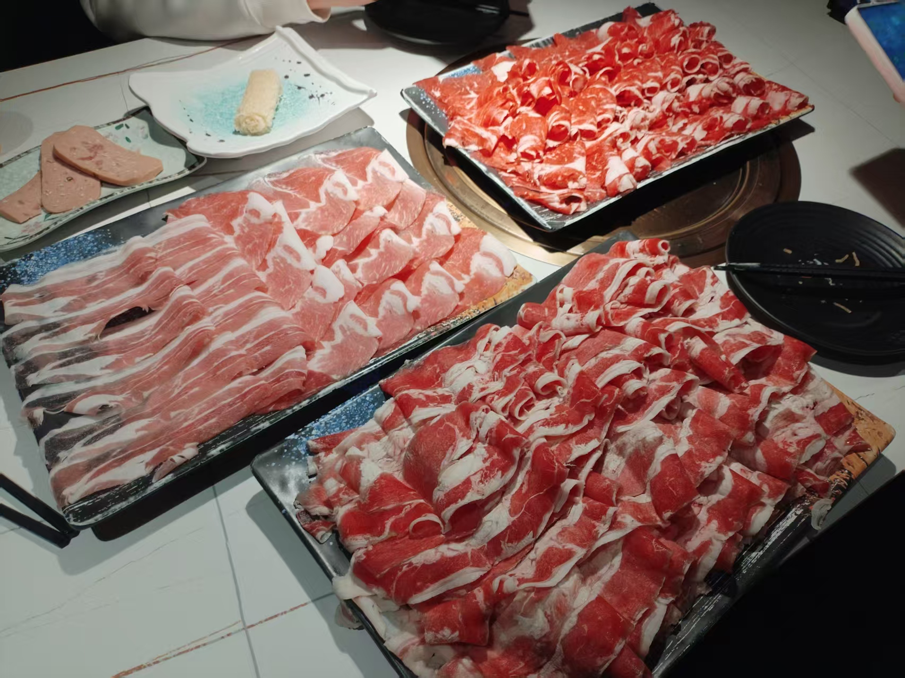
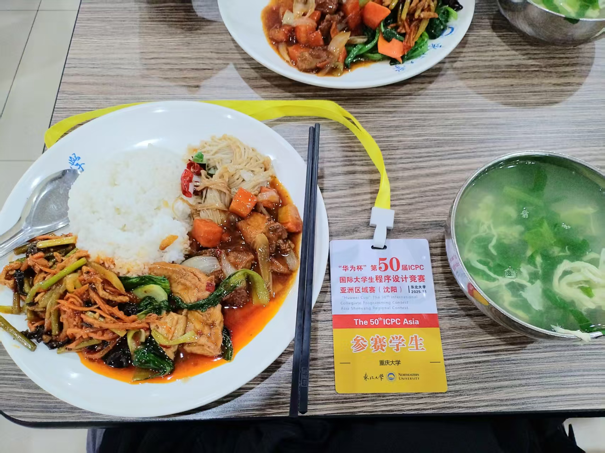
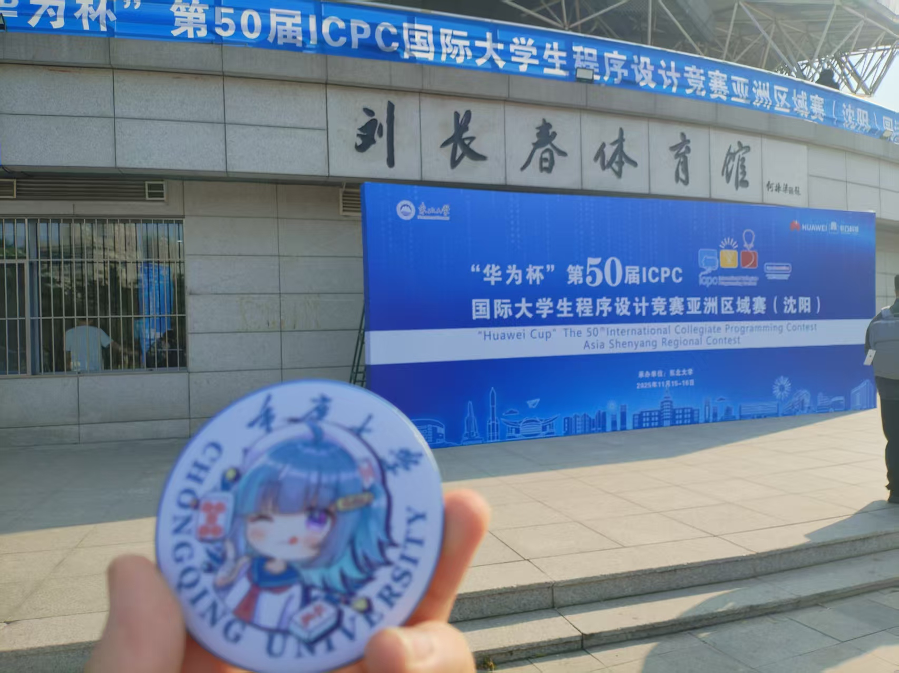

ICPC 2025 沈阳站 游记
省流：手速够快三题铜了。离银牌差一个二分或者一个特判。
其实一直到今天都还有点点恍惚，高考完确认录取到重大之后基本没有再考虑过还要打 ACM，高三一年让我深深感到自卑，成绩永远在班上垫底，感觉自己已经拼尽全力，最后承认自己的能力或许就在这一层了吧。
虽然说暑假的时候也有在复健 ACM，尝试搞了新博客（现在这个的前身，用了几天就被废弃了）；但高中 OI 时期的心魔好像还是缠绕着我，拿到题没有思路的时候陷入”我怎么做不出来，完蛋了，我肯定做不出来了“的怪圈，害怕自己想错，不敢动手写或者手模，遇到复杂一点的情况就退缩了。于是决定不打 ACM 了转去学 CTF，结果也没学几天。
转折点大概是在九月十六号，现在的队长 lxy 突然通过 cquacm 大群问我要不要一起打 xcpc。后来才知道其实是原来的嘉陵江有色金属货轮半路解散了，拉上了 yhn 之后还缺一个人。总之想着打一打也不亏就同意了。九月份军训完全没练，国庆节各种跑出去玩也没有复健，回来之后发现数分普物需要花的时间比想象得多，加上自己其实还是有点摸，时常不想做事情就扣扣手机打打麻将就混过去了，其实现在看来还不如骑车去微电园打两把舞萌，起码能锻炼身体。
中间 vp 了四五场 xcpc，感觉由于没怎么练习其实更多时候起到的是副作用，像是 vp CCPCfinal2019 的时候一眼盯真出 $2(n + m) - 4$ 那种完全只是偶然，其实很清楚疏于练习的自己早就没有 OI 时期的半点水平……更让人感觉嘲讽的是就算这样还能接到去机构讲课的活路……哎，干脆我以后跑去当 OI 教练得了😂😂😂
十月份的时候隔壁队的 hjd 拉我进了一个 srtp 项目，打算用 DOMJudge 重构一下 CQUOJ 用来办比赛，还要接入 AI 做分析什么的，为了这个玩意儿立项答辩又搞得焦头烂额，最后发现答辩非常草台班子，有点无语。。。。总之勉强是通过了，之后还得使劲干活。
总之差不多就在各种摆各种焦虑和各种b事里迎来了十一月。还是好想发问为什么 xcpc 报名费都这么贵，再加上路费要是没法报销的话那就彻底完蛋了，哎，啥时候能给机构打下工回下血。
开赛前的一两天准备了一下板子，计算几何由于数分普物作业做不完临时找了个 kuangbin 的板子用，虽然最后真的如同 lxy 说的那样除了 vimrc 完全没有看，哈哈，A 区黑娃旁边那个打印店怎么 0.5 一张黑白，太几把黑了；本来是打了板子的结果走的太着急给忘了，怒亏一块八。我说想到借词典用的时候怎么完全没有想到可以直接用图书馆里面发现的那本神奇 acm 计算几何教程呢，纯唐。周四的时候由于 ccpc 重庆站志愿者培训的缘故，yhn 从 A 区跑到虎溪来，之后三个人一起去空海吃了一顿寿喜烧，由于以为烤肉自助的份数和寿喜烧差不多导致我们多点了非常非常多肉，本来 lxy 以为他的 50 块押金要没了，很可惜我是 super david dai 所以差不多一个人造完了接近两盘的量于是顺利解决。不得不说空海的肉真材实料的确实非常爽，狠狠摄入蛋白质！

去之前在黑娃爽吃了我最喜爱的豆花肉片，运气还挺好刚好赶在厨师下班之前走进去点到了中午的最后一份，哎，真的好好吃，为什么黑娃不能在大学城再开一家店呢。。。但可能吃到这碗豆花的代价就是坐地铁的时候连续两次发现刚好错过然后等了十多分钟，最后到登机口的时候刚刚好开始登机，从沈阳回来的时候也是差点没能赶上，以后得留个一个半小时到机场了。。。
落地之后那股北方特有的沙尘和烟灰一样味道的冷空气一直在猛猛往我肺里灌，之前每次回烟台也都是这股感觉。走在街上实实在在的感觉到报志愿之前家里人说的“东北现在其实有点衰落了”是什么意思，尽管是在市中心的东北大学附近，倒闭的店铺根本数不过来，差不多已经落光的银杏更加深了这股感觉；找了一个据说味道不错的小烧烤店要了点小烧烤吃，感觉其实一点都不多但每个人吃了四十块，好像物价也没有那么便宜；但或许物价便宜的应该是那些类似于街头盒饭小吃一样的东西吧。回酒店的时候整了个熏鸡架吃，这倒确实是很实惠的。
由于白天在搞辽宁省赛所以热身赛被放到了晚上，跑去东北大学食堂尝了尝之后就跑去沈阳大街还有皇姑屯巡礼去了，很可惜由于封路没能到三洞桥那个位置附近。不过东北大学这食堂味道确实很符合我对东北盒饭勾芡重味道重的幻想。

似乎沈阳出现了国内 xcpc 历史上的第一个通信题，热身赛的时候 A B 都在狠狠犯瓜，属实整笑了。。。好像 xzq mzx hfy xqx 都来了这个站。xzq 正式赛之前的时候跑过来聊了一会还。

正式赛开赛之前其实还是蛮紧张的，开始之后按照一贯的 yhn ABCD lxy EFGHI 我 JKLM 的分组开题。总之先是配了一下 vim 的环境，好在沈阳的这个键盘非常顺手，打起来很舒服，写了一会配置文件之后冷静下来找了一下可做题，把 I 很快解决了，交之前花了点时间检查了一下免得吃罚时，不过由于比较紧张还是数组开小挂了一发，后面 yhm 把 B 做了，和 lxy 交流了一下 M 的思路，他写了一会爆搜之后也一发过了。之后看榜可做题大概是 AFK 三个题，F lxy 差不多两小时的时候有了思路开始写，想了想觉得 F 和最小环有点关系，交给 lxy 之后我和 yhn 一直在尝试找 K 的不变量然而没有任何收获，后面我转去想 A 拆了一下式子，觉得可能要根号分治之类的东西但是完全没有想法。结果就是开始罚坐，差不多三十分钟的时候认命看榜了，发现 G 过了一些但感觉应该也不是很能做。
结束之后看了眼榜，觉得 K 应该是那种想得出来就很快想不出来拉倒的题，所以应该不会打铁，就和三模哈希米的人一起吃了铁锅炖，但感觉味道甚至不如之前在成都吃到的，报吃。得知哈希米原来也是个拼好队而且有两个都是数院的。聚餐的时候意外刚好坐成了一边计院一边数院的样子。
赛后发现 G 原来是个非常简单的题，大概率是榜又被带歪了。只能说下次过完签到就应该好好想不要老是看榜。。。
这好像是队长的最后一次 icpc 了，没能银牌感觉真的很遗憾。下周郑州拿铜的难度可能和这次银差不多，也不知道有没有机会报销路费。。。
回来之后不知道为啥心情有点郁闷就一直熬夜到了六点钟之后上床睡觉，干脆直接翘掉了早上的普物睡到十二点钟。醒来一看发现一抹多事情等着我做。数分作业普物作业形策论文思政报告计算机实验洗衣服作业改错命题重新证明我简直要疯掉。。。周一周二差不多就是混过去了，然后就周三了。 重庆突然就变冷了，手脚冰凉，周二下午差点都想直接把数分翘了不去上课。更要命的是发现自己钱不够了所以又要吃泡面否则郑州没钱用了。。哈哈。。我就这样。。一想到 acm 没好好训数分没好好做题就觉得烦，又变成了事情开始堆积不知道哪一天才能解决的状况了。
总之就先写到这里，睡觉了。